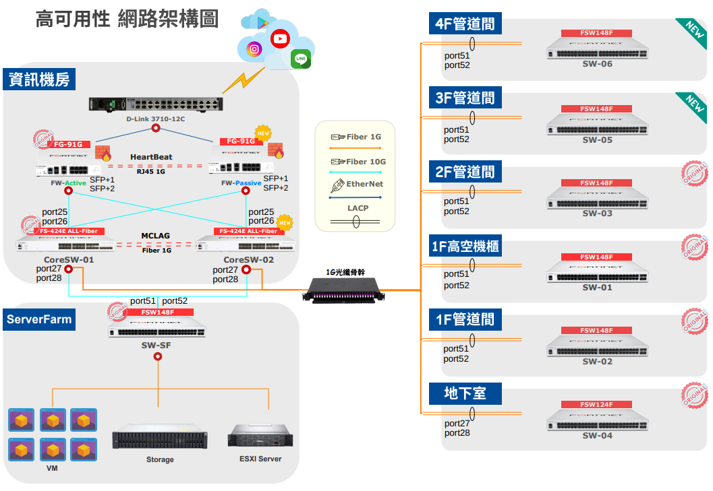
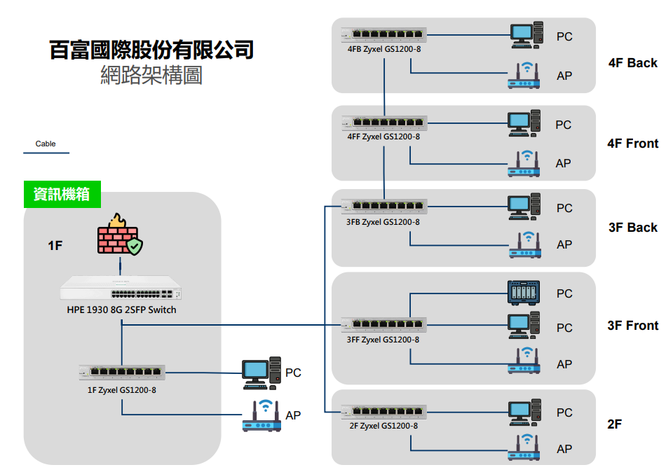

01 / 核心網路
企業核心網路高可用性建置
雙 FortiGate HA、雙 FortiSwitch MCLAG、全網狀備援，以及第一次上架失敗原因的完整處理紀錄。
查看完整專案 →首頁 / 專案
實際參與的規劃、建置、移轉與問題排除紀錄。

01 / 核心網路
雙 FortiGate HA、雙 FortiSwitch MCLAG、全網狀備援，以及第一次上架失敗原因的完整處理紀錄。
查看完整專案 →
02 / 網路優化
從四個樓層的 Network Loop 與非標準分線開始，重新規劃核心、存取層及二層網路防護。
查看完整專案 →MORE PROJECTS